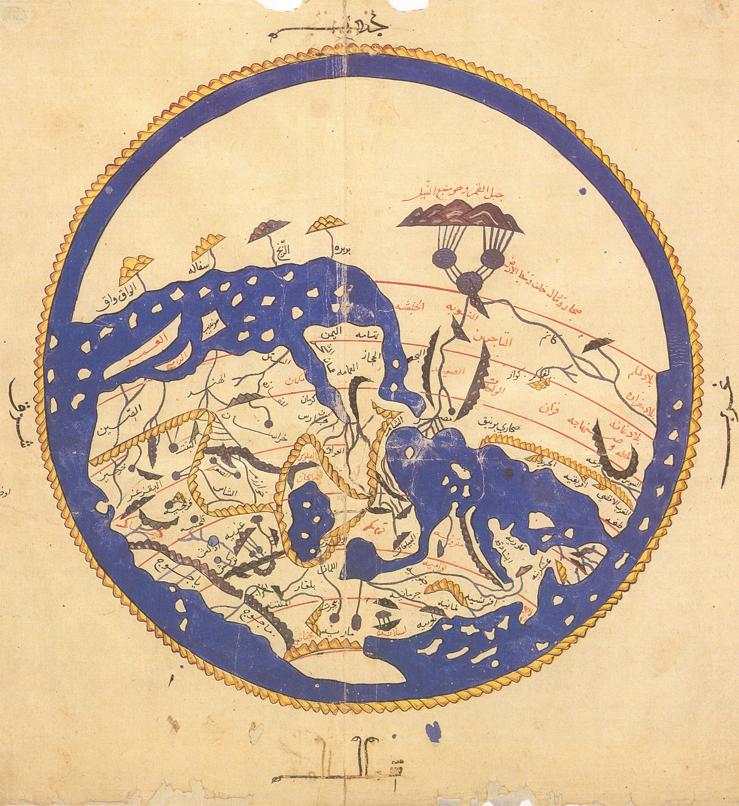
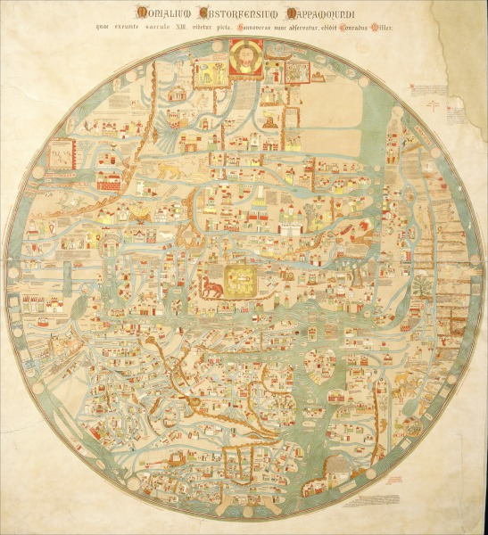
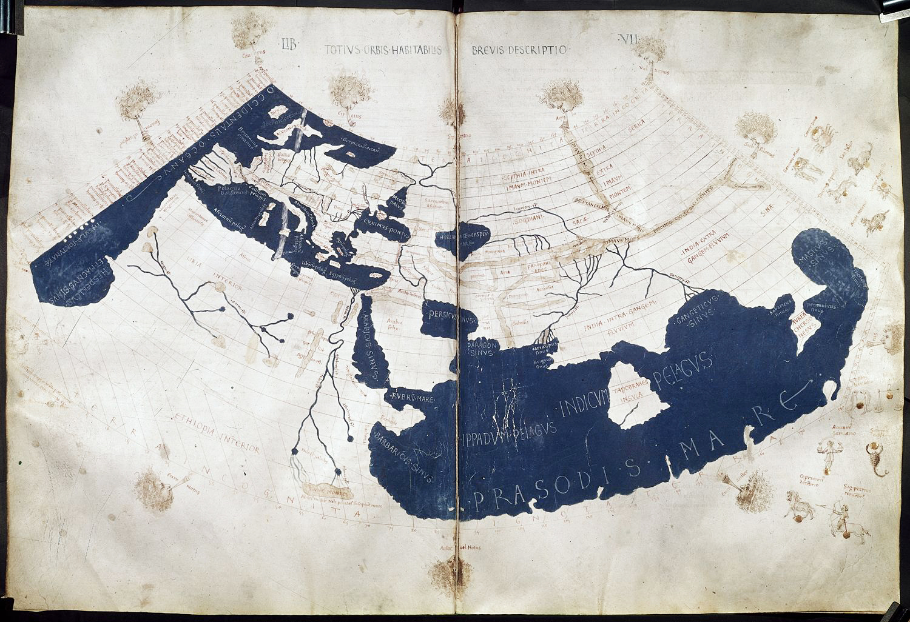

Période Médiévale
Introduction
La période médiévale est marquée par une cartographie influencée par les croyances religieuses et les découvertes progressives du monde connu.
La carte du monde d'Al-Idrissi (XIIe siècle), montrant une représentation détaillée du monde connu, avec une orientation sud-nord inversée. Elle combine les connaissances accumulées par les géographes musulmans et les récits des marchands.
Les mappemondes médiévales
Les mappemondes européennes, telles que la célèbre mappemonde d'Ebstorf, représentaient le monde sous une forme circulaire, mettant souvent Jérusalem au centre.
Exemple de mappemonde médiévale représentant les continents sous une forme circulaire, avec des éléments religieux et des représentations symboliques.
Les portulans et la navigation
Les portulans sont des cartes nautiques détaillées utilisées par les marins médiévaux pour naviguer en toute sécurité. Ces cartes incluaient des informations sur les ports, les courants marins et les distances de navigation.
Un portulan médiéval montrant les routes commerciales et les principaux ports maritimes en Méditerranée.
Influence de Ptolémée
Les travaux de Ptolémée, redécouverts en Europe à la fin du Moyen Âge, ont influencé de nombreux cartographes médiévaux, en introduisant des concepts tels que les coordonnées géographiques et les projections cartographiques.
Une carte inspirée des travaux de Ptolémée, qui a eu une influence durable sur la cartographie européenne jusqu'à la Renaissance.
Conclusion
La cartographie médiévale a jeté les bases des explorations futures en combinant des influences religieuses et scientifiques, marquant une étape importante entre les connaissances antiques et les avancées de la Renaissance.